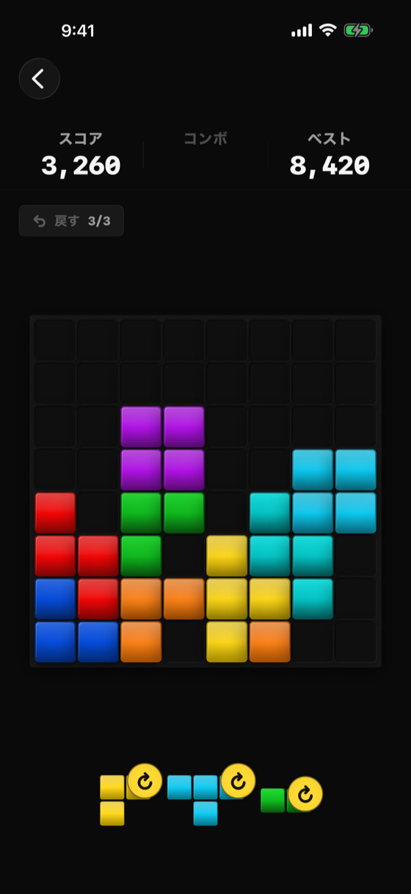

画面イメージ

v1.4 自動撮影（fastlane snapshot）
UI 構成
| 要素 | 説明 |
|---|
| ScoreHeaderView | 現在スコア / ハイスコア / コンボ。v1.5.3〜 コンボは連鎖1から表示し、次に消えない手を置くと連鎖が切れるときは見出しが「コンボ」から「あと1手で切れる」に変わる（VoiceOver は「コンボN。次に消えないと切れます」）。ボーナスタイム中はコンボを出さない |
| GridView | 8×8グリッド描画（消去アニメ含む）。v1.5.2〜 各マスがタップを受け付ける（タップで置く操作。下記「ピースの置き方」）。v1.5.4〜 置くと消える行と列のマスを光らせる（下記「置くと消える列の予告」） |
| BlockTrayView | 3スロットのピース。ドラッグで運ぶ／タップで選ぶ（v1.5.2〜）。選択中のピースはアクセント色の枠で囲む。v1.5.4〜 高さを固定し、ピースを下端でそろえる（下記「盤面とトレイのレイアウト」） |
| プレビュー表示 | ドラッグ中の配置先ハイライト。タップで置く操作では「仮置き」（置く位置を薄く表示）にも使う。v1.5.4〜 置ける位置のときは、あわせて置くと消える行と列のマスを光らせる |
| 回転ボタン | v1.5.4〜 ピースの下に置く（縦に4マスある棒だけはピースの右横）。v1.5.3 まではピースの右上に重ねて表示していた（ピースの一部が隠れていた）。タップで90度回転（4方向）。ボタンに触れたまま指を動かすとピースを持ち上げて運べる（v1.5.2〜）。対称ピース（●・□・＋）には出さない。タッチターゲット 48pt（→アクセシビリティ基準参照） |
| アンドゥボタン（戻すボタン） | 1手戻す。無料は最大3回、プレミアムは無制限。タッチターゲット 48pt（→下記アンドゥボタン仕様）。ボーナスタイム中は、この行ごと残り時間のバーに切り替わる |
| ボーナスのゲージ（BonusGaugeView・v1.5.3〜） | 戻すボタンの行の右端。8目盛りで、ラインを1本消すごとに1目盛りたまる。見出しは「ボーナス」、残り1本で「あと1本！」に変わり、目盛りが点滅する。VoiceOver は「ボーナスタイムまで、あとN本」。文字は v1.5.4〜 13pt（rounded。v1.5.3 は 11pt） |
| 一時メッセージ | アンドゥやタップで置く操作の案内（「もう一度タップすると置きます」「ここには置けません」など）。v1.5.2〜 戻すボタンの右に表示（以前はボタンの下に出していたため、表示のたびに盤面が上下していた）。約1.8秒で消え、VoiceOver でも読み上げる。v1.5.4〜 文字を 11pt → 15pt（rounded・heavy）に。2行まで、収まらないときは 60% まで縮める。高さは最大 48pt |
| PlayFeedbackOverlay | スコアポップアップ・賞賛テキスト・クロス爆発 |
| BannerAdView | 下部固定。広告を配信できる環境（App Store 配信版）で、広告 SDK の初期化が済んでいるときだけ表示。広告を配信しない環境・プレミアム購入時・撮影モード時は枠ごと非表示 |
バナーを出さない場合は高さ0ではなくビュー自体を配置しないため、盤面下に余白は残らない。
表示可否の条件は
広告制御機能 を参照。
（v1.5.0 時点の本項は「広告は恒久停止のため全ユーザーで非表示」としていたが、広告基盤は Unity LevelPlay に移行済みで、表示は上記の条件で決まる）
ボーナスタイム中の画面（v1.5.3〜）
ルール（ゲージ・制限時間・倍率・盤面の型）は ゲームロジック の「ボーナスタイム」を参照。ここでは画面の見え方だけを書く。
| 要素 | 説明 |
|---|
| 残り時間のバー（BonusTimerBar） | 戻すボタンの行（ゲージを含む）と同じ場所に差し替えて出す（行の高さは変えず、盤面を上下させない）。左から残り秒数・残り時間のバー・倍率（×N）と「全消し N」（このボーナスタイムで全消しした回数）。v1.5.6〜 バーと倍率の色はテーマに関係なく金色（#FFD933）。残り5秒からバーと数字を朱色（#FF6E4F）に変える（v1.5.3〜v1.5.5 は残り3秒から・テーマのアクセント色）。残り時間の効果音と振動は残り3秒からのまま。文字サイズを最大にしても行より高くならないよう上限を設ける。VoiceOver は「ボーナスタイム。残りN秒。倍率N倍。全消しN回」 |
| 入る帯 | 画面を少し暗くし、画面いっぱいの帯で「ボーナスタイム」／「15秒で、何回全消しできるかな」（秒数は制限時間から出す） |
| 全消しの帯 | 盤面を全消しして置き終えたとき 「全消し！」／「つぎは ×N」（上がった後の倍率） |
| 全消しならずの帯 | 全消しできずに置き終えたとき 「つぎの盤面」（小さめの帯） |
| まとめのカード | 時間切れのとき、画面を暗くして 「タイムアップ」／「全消し N回！」（0回なら「おしい！」）／「ボーナス +点」（このボーナスタイムで得た点）を1.8秒見せ、ボーナス前の盤面に戻る |
| 背景（v1.5.6〜・演出1） | ボーナスタイム中だけ、画面の背景を金色の夜明け（上の濃い紺から下の琥珀色へのグラデーション＋画面の下から昇る光）にし、光の粒（22個）がゆっくり昇る。粒の明るさの揺れは 0.25〜0.5Hz。v1.5.3〜v1.5.5 は背景の中央にテーマのアクセント色の光を灯すだけだった |
| 盤の枠の光の帯（v1.5.6〜・演出2） | 盤の背面に盤より一回り大きい金色の帯を置き、明るい部分が3.2秒で盤の周りを1周する。v1.5.3〜v1.5.5 はアクセント色の太い縁と周りの光だった |
| 入る瞬間（v1.5.6〜・演出3） | ボーナスタイムに入る瞬間に、画面に白い光が1回だけ広がる。盤はカードのように縦軸でめくれてボーナスの盤面になる（0.26秒で90°まで回して差し替え、0.34秒で戻す） |
| 残り時間のリング（v1.5.6〜・演出4） | 盤を囲む金色のリング。上の中央から時計回りに、残り時間の分だけ描く。残り5秒から朱色にし、1.2秒周期でゆっくり脈打つ（上の残り時間のバーと同じタイミングで朱色になる） |
| 置いたときの点（v1.5.6〜・演出5） | ボーナス中は置くたびに、置いた場所に金色の光の粒が散り、その1手で得た点（置いた点＋消した点）が弧を描いてスコアの数字まで飛ぶ（約0.82秒）。ボーナス中は通常の「その場に出る得点の文字」は出さず、スコアの数字を金色で光らせる。賞賛の文字やクロス爆発などの色も金色にそろえる |
| 倍率のメダル（v1.5.6〜・演出6） | 盤のすぐ上に「×N」のメダルを常に表示し、倍率が上がる瞬間だけ弾む。メダルはマスと盤の縁にかからない位置に置く。盤の上に空きが足りない画面だけ盤を少し下へずらし、それでも足りない小さい画面だけマスを少し縮める（下限 24pt。大きい画面ではボーナスに入っても盤は動かない） |
| 全消しと次の盤面（v1.5.6〜・演出7） | ボーナス中に全消しすると、盤の中心から光の輪が広がり（0.95秒）、輪が通ったところで星が光る（0.7秒）。次の盤面へ進むときは、前の盤面が左へ抜け、次の盤面が右から滑り込む。ボーナスが終わって元の盤面に戻るときは淡いフェード。v1.5.3〜v1.5.5 は盤面を縦に1回転させていた |
| ブロック（v1.5.6〜・演出8） | ボーナス中は盤・手持ち・ドラッグ中のピースを金色の宝石風（左上に光の点・右下に暗い縁・明るい縁取り）で描く。元の色の違いは明るさの違いとして残す。4.5秒ごとに盤のブロックへ斜めの光が流れる（流れている1.6秒の間だけ描き直す） |
| 選択枠・予告枠・回転ボタン（v1.5.6〜） | ボーナス中は、タップで選んだピースの枠と「置くと消える」マスの予告枠を白い線（2.5pt）＋外側の半透明の黒い線（55%）にする（テーマの色の枠では金色のブロックの上でほとんど見えなかったため）。回転ボタンはテーマに関係なく金色＋黒い縁にそろえる |
| タップで置くときの案内 | ボーナス中は戻すボタンの行がバーに変わるため、「もう一度タップすると置きます」などの案内は盤面のすぐ下に出す。文字は v1.5.4〜 15pt（v1.5.3 は 13pt） |
- 帯とまとめはタップを受け付けない（下の盤面の操作も、演出の最中は受け付けない）。演出の最中にマスをタップしても「ここには置けません」は出さない
- 帯は VoiceOver では読まず、段階が変わったときに読み上げで伝える（入る:「ボーナスタイム。15秒で、何回全消しできるかに挑戦します」／全消し:「全消し。次はN倍」／時間切れ:「タイムアップ。全消しN回、ボーナスN点」）
- 演出を控える設定（OS の「視差効果を減らす」・アプリの設定）では動きを抑える。帯は横から滑り込まずに表示だけになり、ゲージの点滅も出さない。v1.5.6 の演出は次のとおり: 背景の光の粒は止まった点、枠の帯は止まったグラデーション、入る瞬間の白い光・全消しの光の輪と星・ブロックの斜めの光は出さない、リングは脈打たない、メダルは弾まない、盤のめくりと滑り込みは淡いフェード、得た点はスコアのすぐ下に出て消えるだけ（0.63秒表示→0.27秒で消える）
- ボーナス中の明滅（粒の揺れ・リングの脈・斜めの光）は、どれも1秒に1回より遅い周期にしている
- VoiceOver: ボーナス中のピースは見た目がすべて金色のため、元の色名ではなく「金色、Nマスのブロック（スロットN）」と読む（v1.5.6〜）
- ボーナス中は BGM がボーナスの曲に変わる（v1.5.6〜。サウンド機能の「BGM」）
- ボーナス中は戻すボタンが無い（アンドゥ不可）。回転ボタンは使える
色（v1.5.6〜）: ボーナスタイムは「別の世界」として、テーマに関係なく同じ金色で描く（Models/BonusPalette.swift）。盤面の土台と空きマスはテーマの色のまま。金色のブロックはどのテーマの空きマスとも 3:1 以上のコントラストになるようにしている（単体テスト ColorThemeContrastTests）。紫のブロックの金色は、赤とほぼ同じ明るさだったため暗くし、明るさで見分けられるようにした。
ドラッグの途中で盤面が切り替わった場合（ボーナスの次の盤面・時間切れで元の盤面に戻ったとき）、指の下のピースが別物になるため、そのドラッグでは置かずにピースをトレイへ戻す。指を離すまでそのドラッグは何もしない（GameEngine.trayRevision でトレイの入れ替えを見分ける。「もう1手」の入れ替えも同じ扱い）。
ボーナスの演出の実装メモ（v1.5.6〜）
- 演出の View は
Views/Game/Bonus/ にまとめた（背景 BonusBackdropView・枠の帯とリング BonusBoardFrame・盤の周りの飾り BonusBoardDecorations・めくりと滑り込み BonusBoardTransition・メダル BonusMultiplierMedal・全消しの波紋 BonusPerfectRipple・スコアへ飛ぶ点 BonusScoreFlight・宝石風のブロックと斜めの光 BonusGemSurface）
- ゲーム画面の構成: GameView から盤面の行を
GameBoardSection（盤面・盤の切り替え・盤の周りの飾り・ボーナス中の案内、盤の位置と使える領域の測定）、画面全体の演出を BonusEffectsLayer（入る瞬間の白い光・スコアへ飛ぶ点）に切り出した
- 演出はボーナスタイム中だけ置く。外せば TimelineView ごと消えるので、通常プレイでは描き直しの負荷がかからない。残り時間（1秒に20回変わる）はリングの包みだけが読み、GameView の body では読まない
- 演出の見た目は UI テスト
BonusEffectsUITests で撮って確かめる
ピースの置き方（v1.5.2〜）
ドラッグとタップの2通りで置ける。どちらを使っても結果（得点・消去）は同じ。
ドラッグで置く
| 項目 | 仕様 |
|---|
| 持ち上げ | ピースに触れて約10pt動かすと持ち上がる |
| 運んでいる間の見た目 | 盤面のマスと同じ大きさで描く（v1.5.1 までは 1.18 倍に拡大していた） |
| 置く位置の決め方 | 指の下に描かれているピースの見た目の位置で決める。v1.5.1 までは指の位置から計算していたため、ピースの端を掴むと見た目と置かれる位置がずれた |
| マスへの合わせ方 | 最も近いマスに合わせる。上下左右とも盤面の外へ約0.5マスまではみ出していても盤面に吸い付く（v1.5.1 までは上端・左端だけ約1.5マス外まで吸い付いていた） |
| 離したとき | 置ける位置なら置く。置けない位置なら、ピースはトレイへ戻り小さく揺れる |
v1.5.1 までの不具合（v1.5.2 で修正）: 盤面の位置を、画面を開いた直後に一度だけ測って使い続けていた。
iOS 26 ではその後のレイアウト確定で盤面が上に動くため、ドラッグで置く位置が狙った位置より約1.6マス上にずれ、盤面の上のほうの行には置けなかった。
演出（パーティクル・得点表示）も同じ基準位置を使うので同じだけずれていた。
v1.5.2 からは盤面の位置の変化を追跡し続ける（メッセージやバナーの表示で盤面が動いた場合も追従する）。
タップで置く（2段階）
- ピースをタップして選ぶ。選択中のピースは枠で囲まれ、軽い振動が鳴る（置いたときとは別の振動）。同じピースをもう一度タップすると選択を解除する
- 盤面のマスをタップすると、そのマスを覆う位置に仮置きする（置く位置を薄く表示し、「もう一度タップすると置きます」と案内する）。タップしたマスが必ず埋まる位置を探し、盤面の端をタップした場合も盤面に収まる位置へずらす。置ける位置がなければ「ここには置けません」と表示する
- 仮置きの上をもう一度タップすると置く。仮置きの外をタップした場合は、その位置に仮置きし直す
- 仮置き中にそのピースを回転すると、仮置きは消える（回転前の形で計算した位置のため）
- 選択中のピースがドラッグで置かれるなどしてトレイから消えたら、選択も解除する。ゲーム終了時も解除する
- 2段階にしたのは、1回のタップで置く方式では、ピースを選んだまま盤面にうっかり触れただけで置かれてしまうため
- チュートリアルの1枚目は「ドラッグして置く」。本文で「ドラッグが難しいときは、ピースをタップ → 置きたいマスをタップ → もう一度タップ、でも置けます」と案内する
位置の決め方の詳細は ゲームロジック の「タップで置くときの位置」を参照。
置くと消える列の予告（v1.5.4〜）
ドラッグ中、またはタップで置く操作の仮置き中に、いまの位置に置いたらそろって消える行と列のマスを光らせる。置けない位置では光らせない。ボーナスタイム中も通常時も同じく動く。判定は ゲームロジック の「置くと消える列の予告」を参照。
| 項目 | 仕様 |
|---|
| 見た目（GridCellView の previewClearHighlight） | マスに白 22% の塗り＋テーマのアクセント色の縁（太さ max(1.5pt, マス×5%)）＋アクセント色 60% の光（半径4） |
| 出方 | 0.12秒でふわっと出る |
| 消える場面 | 仮置き・ドラッグの解除、新しいゲーム、アンドゥ |
| VoiceOver | 該当マスの読み上げに「、置くと消える」を足す（下記「VoiceOver」） |
回転ボタン
- 置く場所（v1.5.4〜）: ピースの下に置く（ピースとの間隔 4pt）。縦に4マスある棒（縦の高さが3マスを超えるピース）だけは、ピースの右横に置き、下端をそろえる。v1.5.3 まではピースの右上に重ねて表示しており、ピースの一部が隠れていた
- ボタンの大きさは 48×48pt のまま。回転できないピース（正方形など）は、同じ大きさの透明な枠を置いて、トレイの段をそろえる
- UIテスト用に accessibilityIdentifier
rotateButton{スロット番号} を付けている（v1.5.4〜）
- タップで時計回りに90度回転する
- ボタンに触れたまま指を動かすと（約10pt）、ピースを持ち上げてそのまま運べる。v1.5.1 までは、ボタンがピースの掴める範囲の一部を覆っており、そこから始めたドラッグは何も起きなかった。v1.5.4 でボタンをピースの外へ出した後も同じく運べる（UIテスト testDragFromRotateButtonMovesPiece で確認）
- 指を離したときの移動量が約30pt未満なら、持ち上がっていても置かずに回転として扱う（押す間に指が少しずれても回転する）
- ドラッグ中はボタンを透明にして隠す
- VoiceOver ではボタンとして読み上げ、ダブルタップで回転できる
- 回転すると置ける場所がある場面では、ボタンの外周にリングを表示する
盤面とトレイのレイアウト
盤面の大きさ
- v1.5.4〜: 盤面に実際に使える領域の高さを測って（onGeometryChange）マスの大きさを決める。1マス = min(44pt, 幅から求めた値, max(24pt, 測った高さから求めた値))
- 幅から求めた値 = (画面幅 − 40 − 2×7) ÷ 8
- 高さから求めた値 = (領域の高さ − 12 − 2×7) ÷ 8
- 測る前の最初の1回だけ、従来の計算（下記 v1.5.2〜v1.5.3 の方式）を使う
- v1.5.2〜v1.5.3: マスの大きさを画面の幅だけでなく画面の高さとバナーの高さからも計算し、小型端末やバナー表示時に盤面とトレイが画面外へ押し出されないようにしていた（1マスは最大44pt。高さから求める値は28ptを下限とする）
- 画面の高さが 700pt 未満のときは、要素間の縦の間隔を 16pt から 8pt に詰める（v1.5.2〜）
v1.5.3 の不具合（v1.5.4 で修正・ISSUES BP-019）: 画面の高さとバナーの高さから計算していたため、iPhone 16/17 でバナー広告が出ると、トレイが画面下からはみ出すおそれがあった。
v1.5.4 からは実際に使える領域の高さを測る。バナー広告が出ていてもトレイが画面内に収まることを UIテスト testLayoutFitsWithBanner で確認している（撮影用の起動引数 -uiTestSnapshotBanner で、広告の代わりに 62pt の灰色の枠を出す。本番では使わない）。
トレイ（v1.5.4〜）
| 項目 | 仕様 |
|---|
| 高さ | 固定: マス×3 ＋ 4pt ＋ 4pt（ボタンとの間隔）＋ 48pt（回転ボタン）。補充のたびに高さが変わって盤面が上下に動かないようにするため（v1.5.3 までは 116pt 固定） |
| ピースのそろえ方 | 下端でそろえる |
| 間隔 | ピース同士 18pt → 14pt、左右の余白 20pt → 14pt |
| トレイのマスの大きさ | 最悪ケース（4マス幅×3スロット）でも横にはみ出さない値で、20〜30pt（上限を 26 → 30 に上げた） |
| 空いたスロット | 見た目も、回転ボタン1つ分の段の上に置く |
空きマスの見やすさ（v1.5.4〜）
- 盤面の窪みの明線（boardWellHighlight）を白 4% → 10% に
- 空きマスの全周に白 6% のごく薄い縁取りを追加（太さ max(0.5pt, マス×2%)）
- 空きと盤面の地の明るさがほぼ同じで、空きを数えにくかったため
アンドゥボタン仕様（v1.5.0〜）
| ユーザー区分 | 回数 | 残数表示 | 広告視聴 |
|---|
| 無料 | 3回 / ゲーム（v1.4 から変更なし） | 「残り/3」形式 | 広告配信中は2回目以降に必要（現状は配信停止中のため不要） |
| プレミアム購入者 | 無制限（★ v1.5.0 特典） | ∞ | 一切要求しない |
ボタンのラベルは広告視聴が必要な場合のみ「戻す (広告)」となるが、広告配信停止中は常に「戻す」と表示される。
支援技術向けには、無制限時は「配置を1手戻す（回数無制限）」、通常時は「配置を1手戻す（残りN回）」と読み上げる。
アクセシビリティ基準
タッチターゲットサイズ
| ボタン | タッチターゲット | 採用基準 |
|---|
| 回転ボタン | 48 × 48 pt（v1.5.4〜 ピースの下、縦に4マスある棒だけ右横。ピースに重ならない） | Material Design 3（Apple HIG 44pt より厳しい側） |
| アンドゥボタン（戻す） | 48 × 48 pt | 同上 |
| トレイのピース | 見た目の大きさ＋周囲 7pt | 1マス等の小さいピースでも掴みやすくする（隣のスロットとは重ならない幅） |
VoiceOver（v1.5.2〜）
- トレイのピースはボタンとして扱い、「選択中／未選択」を読み上げる。ヒントはタップで置く手順（選ぶ → マスを選ぶと仮置き → もう一度選ぶと置く）
- 盤面の各マスは「上から◯行目、左から◯列目、空き／使用中」と読み上げる。ピース未選択時は「先に画面下のピースを選択してください」、仮置き中のマスでは「もう一度選ぶと、ここに置きます」とヒントを出す
- v1.5.4〜 置くと消えるマスでは「、置くと消える」を足し、「上から◯行目、左から◯列目、置くと消える、空き」の順に読む（状態は最後）
- 一時メッセージは読み上げでも伝える
Dynamic Type（文字サイズ）の優先順位
OS の「文字サイズ」設定（アクセシビリティ設定含む）がアプリ内の文字サイズ設定（fontSizeLevel）より大きい場合は、OS 側の設定を優先して適用する。これにより、アプリ内設定を「標準」のまま使っているユーザーでも、OS でアクセシビリティ目的の大文字設定をしていれば正しく反映される。
状態遷移（GameState）
| 状態 | 説明 |
|---|
.playing | 通常プレイ中 |
.gameOver | 配置不可・GameOverView オーバーレイ |
.rescued | 「もう1手」で救済中（広告配信停止中は広告を挟まず遷移） |
ボーナスタイムは GameState ではなく .playing の中の段階（BonusPhase: 入る演出 entering → 解いている playing → 置き終えた boardFinished → 時間切れのまとめ finished）として持つ。アプリが前面にない間（コントロールセンター・通知・ホーム）は時計を止める。
遷移
| 操作 | 遷移先 |
|---|
| ゲームオーバー判定 | GameOverView（オーバーレイ）。初回のゲーム終了後には、トラッキング許可（ATT）のダイアログが出ることがある（v1.5.2〜。広告制御参照） |
| 戻る | HomeView |
関連
変更履歴
| バージョン | 日付 | 変更内容 |
|---|
| 1.0 | 2026-05-09 | 初版作成 |
| 1.1 | 2026-06-10 | 画面イメージ（fastlane snapshot 自動撮影）を追加 |
| 1.2 | 2026-07-14 | 回転・アンドゥボタンのタッチターゲットを 48pt（MD3 基準）に拡大。OS Dynamic Type 優先ロジックを反映。アクセシビリティ基準セクション新設 |
| 1.3 | 2026-07-30 | v1.5.0 対応: バナー広告を枠ごと非表示（広告配信の恒久停止）に更新。アンドゥボタン仕様セクションを新設し、プレミアムのアンドゥ無制限（残数表示 ∞・広告視聴を要求しない）を追加。.rescued 状態の説明を「もう1手」ベースに修正 |
| 1.4 | 2026-09-29 | v1.5.2 対応: 「ピースの置き方」を新設。タップで置く操作（ピースを選ぶ → マスで仮置き → 仮置きの上をもう一度タップで置く）を追加。ドラッグは盤面と同じ大きさで描き、置く位置をピースの見た目の位置で決めるよう変更。v1.5.1 までの「置く位置が約1.6マス上にずれる」不具合と修正内容を記載。回転ボタンから始めたドラッグでピースを運べるように。小型画面のレイアウト（高さ・バナーを考慮したマスの大きさ）、一時メッセージの位置、VoiceOver の読み上げを追記。バナーの説明を「v1.5.0 の恒久停止」前提から表示条件ベースに修正。ゲーム開始時の通知許可の要求をやめたこと（設定画面へ移動）を関連に記載 |
| 1.5 | 2026-10-01 | v1.5.3 対応: 「ボーナスタイム中の画面」を新設（戻すボタンの行が残り時間のバー＝秒数・倍率・全消しの回数に切り替わる、入る帯・全消しの帯・全消しならず・まとめのカード、背景の光と盤面の縁、盤面の切り替えの1回転、タップで置く案内は盤面のすぐ下、読み上げ、演出を控える設定での扱い）。ボーナスのゲージ（残り1本で「あと1本！」点滅）を UI 構成に追加。コンボを連鎖1から表示し「あと1手で切れる」を出すよう更新。ドラッグの途中で盤面が切り替わったらそのドラッグでは置かないことを追記 |
| 1.6 | 2026-10-02 | v1.5.4 対応: 「置くと消える列の予告」を新設（ドラッグ中・仮置き中に、置いたら消える行と列のマスを光らせる。見た目・消える場面・VoiceOver の「置くと消える」）。回転ボタンをピースの右上からピースの下へ（縦に4マスある棒は右横）移動し、回転できないピースは透明な枠で段をそろえる。「小型画面のレイアウト」を「盤面とトレイのレイアウト」に改め、盤面の大きさを実際に使える領域の高さから決める方式（BP-019 の修正・UIテスト testLayoutFitsWithBanner）、トレイの高さ固定・下端そろえ・間隔 14pt・マス 20〜30pt、空きマスの明線と縁取りを追加。案内の文字（11pt → 15pt、ボーナス中 13pt → 15pt）とゲージの文字（11pt → 13pt）を更新 |
| 1.7 | 2026-10-24 | v1.5.6 (40) 対応（TestFlight 配信済み・未公開）: 「ボーナスタイム中の画面」に演出8つを反映（金色の夜明けの背景と光の粒・盤の枠を3.2秒で1周する光の帯・入る瞬間の白い光と盤のめくり・盤を囲む残り時間のリング・置くたびの光の粒とスコアへ飛ぶ点・倍率のメダル・全消しの光の輪と星と次の盤面の滑り込み・金色の宝石風のブロックと4.5秒ごとの斜めの光）。ボーナスの色をテーマに関係ない金色に固定。残り時間の朱色を残り3秒から残り5秒へ変更（音と振動は3秒からのまま）。旧記述（背景の中央の光・アクセント色の縁・盤面の1回転）を置き換え。ボーナス中の選択枠・予告枠（白＋黒の縁）と回転ボタン（金色）、演出を控える設定での扱い、VoiceOver の「金色」、GameBoardSection・BonusEffectsLayer への分割を追記 |